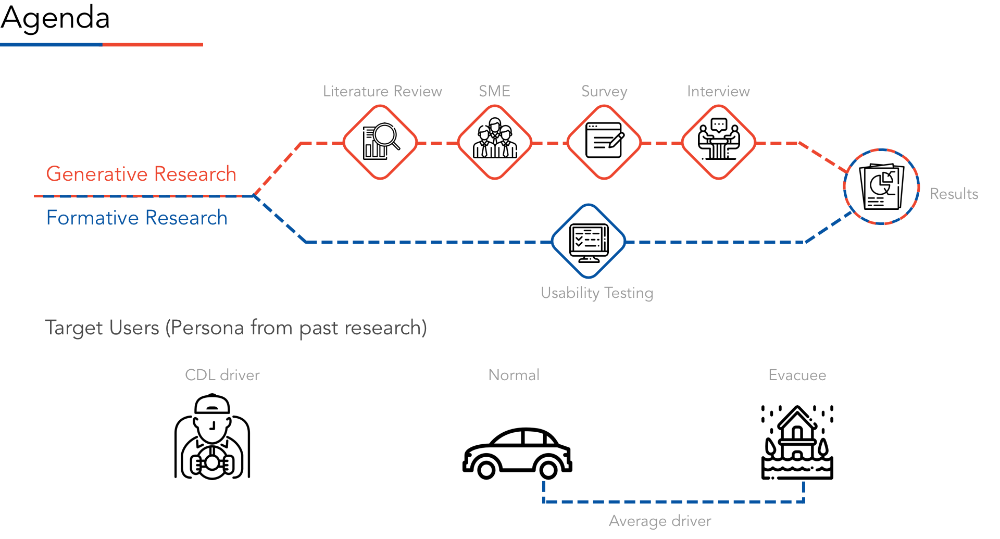

Exploring the Digital Newsroom
Texas Department of Transportation(TxDOT)
By client kickoff meeting, I discovered that the Texas Department of Transportation (TxDOT) would like to deliver messages at their own will, instead of having their messages interpreted and conveyed by the local media. Furthermore, they wanted to raise TxDOT's brand awareness and bridge existing communication gaps between TxDOT and the public.
Problem:
TxDOT has had experienced challenges relying on local media to spread their brand message because the local media were not motivated to promote the positive spin TxDOT wants to apply. However, they had no idea of what would take to open their own Digital/Corporate Newsroom.
Methodology:
Research, Subject matter expert (SME) interviews, Competitive Analysis, Surveys, 1-1 interviews, Usability testing, Quantitative data analysis
Process:
After sorting out several aspects of the research questions using an affinity diagram, I strategized several research methods to focus on different problems, including both generative and evaluative research. I then conducted early research on elements found in a quality online newsroom to clarify the research problem. Moreover, I consulted subject matter experts to gain valuable insights, and conducted an interview and deployed surveys on average drivers to discover how they plan for their trips and to learn more about their driving behaviors. I also moderated user testing to determine pain points on TxDOT's current website.
Tools:
Sketch, Qualtrics, Zoom, UserZoom
What I learned:
-
I combined both generative and formative research approaches to solve existing issues.

From the Affinity Diagram, I obtained higher-level questions and narrowed down our problem scope.

From the Subject Matter Expert, I understood what a digital newsroom consists of and the relationship between the different platforms.
I interviewed two experts whom both have professional experience in the newsroom, and also collected information on how to build a digital newsroom and to further generate questions for following survey and interview studies.

From Survey, I want to determine what are the contents that the users are interested in receiving it and device preference of searching information. I launched the survey using Qualtrics and asked questions about what information users check on daily and what sources they use.

The following showcases some of the interesting findings from the survey.


Then, I want to ascertain how users perceive TxDOT and where do they find the information. I conducted 1-1 interview by asking participants what are their typical driving behaviors, how do they plan on the trip and what do they know about TxDOT


I performed Usability Testing on the current TxDOT website to determine how users were using the website and how they felt. I asked participants to share their screens, open up the TxDOT website, and walk me through two tasks using Userzoom. After completing the tasks, users filled out a 5-point Likert scale and further elaborated with freeform responses.


There were 4 stages of actionable recommendations to help TxDOT build an interactive platform.